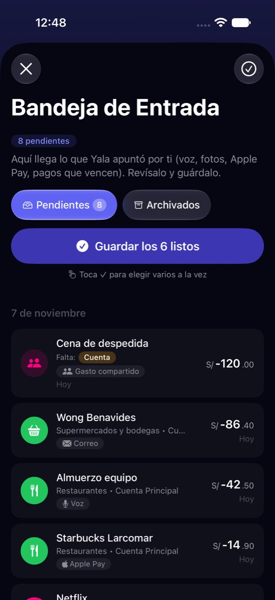
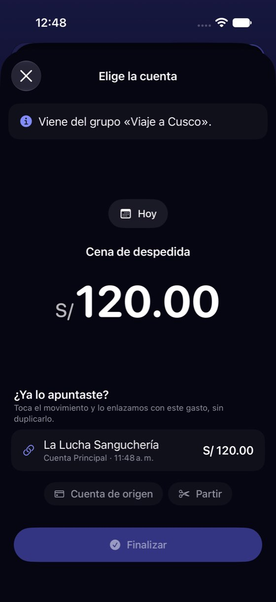
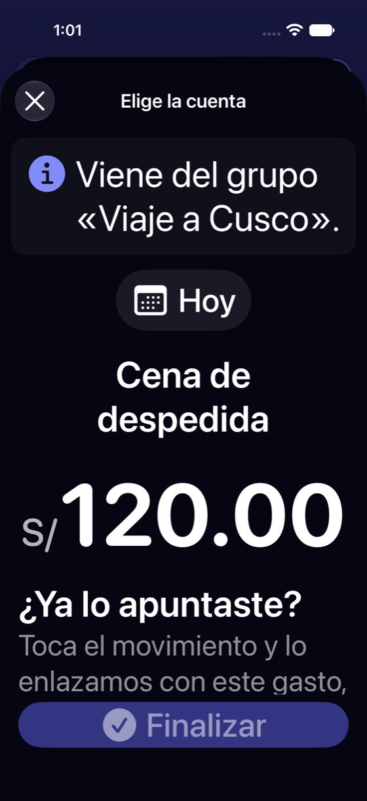

El gasto de grupo pide «Elige la cuenta» cuando la pregunta es «¿ya lo apuntaste?»
Hoy
Capturas del simulador (app de origin/2.3, semillas de prueba). Pasos hoy: 3 toques: abrir, ver el candidato bajo el importe y tocarlo



De dónde sale
- Captura Capturas 13-14: «Elige la cuenta», «Viene del grupo «Viaje a Cusco»», S/ 120.00, «¿Ya lo apuntaste?» con un candidato, «Cuenta de origen», «Partir» y «Finalizar».
- Captura Captura 01: en la lista, «Falta: Cuenta · Gasto compartido».
- Código
GroupExpenseAccountFinalizationSheet.swift:53-75: los candidatos van como accesorio bajo el importe;GroupDraftLinkCandidatesView.swiftlos pinta (decisión L13-15 B, 18-oct). - Código
Localizable.strings: «inbox.groupDraft.finalize» = «Finalizar»; el borrador personal usa «Guardar».
Las opciones
De 3 a 5 alternativas con el mismo caso. Desliza cada recorrido; el anillo cian marca dónde toca Lucía.
Primero la pregunta: «¿Ya lo apuntaste?»
Cuando hay un movimiento que encaja, la hoja abre con la pregunta y el candidato ya elegido: Sí, es este o No, elegir cuenta. Arriba, una línea dice lo que pasó en el grupo: pagaste S/ 120 y tu parte es S/ 40. Sin candidato, abre como hoy, en la cuenta.
Bandeja de Entrada
1 pendienteA favor
- La decisión real (¿ya está apuntado?) va primero; elegir cuenta es el plan B.
- Dice lo que pasó en el grupo: Lucía entiende por qué el importe es S/ 120 y no S/ 40.
- Usa lo que ya decidiste en L13-15 (los candidatos del mismo día, divisa e importe).
En contra
- Dos aperturas distintas según haya candidato: hay que probar las dos.
- Si el candidato es otro pago del mismo importe, «Sí» por inercia enlaza mal (se puede deshacer).
Enlazar desde la fila de la Bandeja
Si hay un candidato, la fila lo dice debajo del nombre («¿Es La Lucha Sanguchería, S/ 120?») con un botón Enlazar. Sin abrir nada.
Bandeja de Entrada
2 pendientesBandeja de Entrada
1 pendienteA favor
- Un toque, sin hoja.
- Se ve en la lista, donde Lucía decide.
En contra
- Filas más altas; con dos o tres candidatos no caben.
- Enlazar sin ver el detalle del grupo.
La hoja de hoy, con el reparto explicado
Se queda el orden de hoy (cuenta arriba, candidatos debajo), pero la cabecera explica el grupo: quién pagó, cuánto te toca y cuánto te deben.
A favor
- Lo más pequeño que responde «¿por qué S/ 120?».
- No cambia el recorrido.
En contra
- El título sigue pidiendo una cuenta aunque la respuesta sea «ya lo apunté».
- Sigue «Finalizar».
Solo los nombres
«Elige la cuenta» pasa a «¿De qué cuenta salió?», «Finalizar» a «Guardar», y la fila de la Bandeja dice «Pagaste tú: falta de qué cuenta salió» en vez de «Falta: Cuenta».
A favor
- Barato.
- «Guardar» como en el resto de la Bandeja.
En contra
- El orden sigue escondiendo la respuesta más probable.
Lado a lado
La última pantalla de cada recorrido, frente a hoy.
Bandeja de Entrada
1 pendienteBandeja de Entrada
1 pendienteComparación
| Opción | Pasos para el caso (maqueta) | Esfuerzo | Riesgo | Reabre |
|---|---|---|---|---|
| Hoy | 3 toques: abrir, ver el candidato bajo el importe y tocarlo | — | — | — |
| D1 · Primero la pregunta: «¿Ya lo apuntaste?» | 2 toques: abrir y «Sí, es este» (hoy: abrir, encontrar la fila bajo el importe y tocarla) | medio | bajo | — |
| D2 · Enlazar desde la fila de la Bandeja | 1 toque | medio | medio | — |
| D3 · La hoja de hoy, con el reparto explicado | Igual que hoy | bajo | bajo | — |
| D4 · Solo los nombres | Igual que hoy | bajo | bajo | — |
Lente de perfiles
Perfiles simulados, no entrevistas Los siete perfiles de la revisión del usuario nuevo, usados como lentes. riesgo alto de trabarse · medio · bajo.
| Perfil | Hoy | D1 | D2 | D3 | D4 |
|---|---|---|---|---|---|
| P1 · Migrante de Excel | no ve el reparto | comprueba con su hoja | sin el detalle | — | — |
| P2 · Principiante abrumado | «Elige la cuenta» y «Finalizar» | una pregunta clara | botón dentro de una fila | el título confunde | — |
| P3 · Anotador rápido que no lee | toca «Cuenta de origen» por inercia | un toque | un toque | — | — |
| P4 · Experto de otra app | lo resuelve | — | — | — | — |
| P5 · Llega por una invitación de grupo | le piden una cuenta que no usa | no tiene cuentas: abre en «elegir cuenta» | — | — | — |
| P6 · Varias monedas y tarjeta | — | — | — | — | — |
| P7 · Texto grande, a veces en iPad | el candidato queda abajo | botones grandes | fila muy alta con AX | — | — |
Recomendación: D1
La pregunta primero, con el reparto en una línea. Es la que hace del candidato —que ya decidiste en L13-15— la salida principal, y le da a Lucía el dato que falta para entender el importe.
Qué decide Jürgen
- ¿La hoja abre con «¿Ya lo apuntaste?» cuando hay candidato (D1)?
- ¿Se cambia «Finalizar» por «Guardar» en los borradores de grupo?
- ¿La línea del reparto («tu parte S/ 40») va también en la fila de la Bandeja?
Revisión por vistas 2.3 · Bandeja, Yala IA, correo del banco, Apple Pay y Siri. Maquetas en HTML con datos ficticios: no son la app. Pasos contados sobre las maquetas; los de «Hoy», en el simulador o en el código citado.